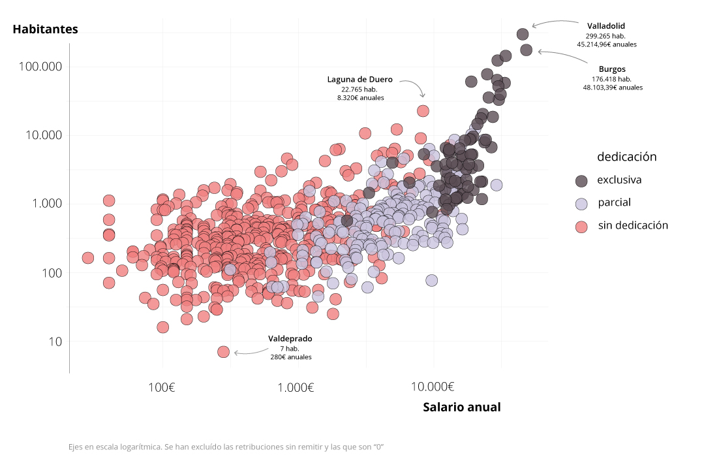
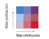

De cero a 48.000 euros: quién cobra cuánto en las alcaldías de Castilla y León
Explorador de las retribuciones anuales
Castilla y León está formada por 2.248 municipios. De hecho, es la región con más municipios de España, seguida por Cataluña (947). Cada uno de sus ayuntamientos cuenta con un alcalde o alcaldesa, cuyo salario queda reflejado cada año en la base de datos del sistema de Información Salarial Puestos de la Administración (ISPA). Los más recientes y que se muestran en este espacio corresponden al ISPA 2020 y son del ejercicio 2019 (descarga los datos).
Mapa de las retribuciones de los ayuntamientos y del número de habitantes
Cuanto más intenso es el morado, mayor es la retribución. Cuanto más intenso es el azul, mayor és la población
Se han omitido los municipios cuyas retribuciones aparecen "sin remitir".
Más de la mitad de los municipios de la comunidad, sin embargo, declaran no cobrar ni un euro por las labores de alcaldía, aunque también declaran que no invierten ninguna dedicación. Por otro lado, un total de 294 municipios no declararon sus retribuciones en 2019.
Existen tres tipos de categorías a la hora de clasificar la actividad de los alcaldes y alcaldesas: sin dedicación, dedicación parcial o dedicación exclusiva. Los salarios anuales que perciben pueden variar mucho de un municipio a otro. El número de habitantes de cada población tiene una correlación con el salario, es decir, cuanto mayor es el número de población, mayor es la retribución que perciben por sus servicios. En algunos casos, no obstante, esta relación no se cumple.
Aunque su municipio cuenta con menos de 100 habitantes, el alcalde de Canillas de Abajo (Salamanca) percibe 9.642 euros anuales en jornada parcial, a diferencia del alcalde de Laguna de Duero, por ejemplo, cuya retribución es parecida pero cuya población supera los 22.000 habitantes.
Otra alcaldía que llama la atención es la de Talavera de El Barraco, que con alrededor de 2.000 habitantes percibe 29.000 euros anuales; Hontanares de Eresma, en cambio, se asemeja en habitantes pero no en salario: 3.321 euros.
Por tipo de dedicación
Hay 73 municipios cuya persona responsable tiene dedicación exclusiva, un 3,2% del total; es indispensable mencionar que Castilla y León es la región con una de las mayores tasas de despoblación del país, y por ello muchos pueblos se ven cada vez más reducidos y envejecidos: cerca de 700 de ellos no alcanzan los 100 habitantes. Por ello, el tiempo y dedicación invertidos no serán iguales en Castil de Peones (25 habitantes), en Burgos, que en Laguna de Duero, Valladolid o León, y es por ello que existen las categorías de dedicación.

Dedicación parcial es una jornada que declaran 185 ediles, el 8,2%. La gran mayoría de los cargos políticos, 1.696, ejercen de alcaldes pero sin dedicación. Es decir, que perciben su salario y hacen las funciones básicas pero no declaran invertir tiempo en ejercer como alcaldes y alcaldesas.
Eso no obstante, algunos alcaldes registrados como “sin dedicación” son responsables de poblaciones relativamente pobladas como Laguna de Duero (22.765 habitantes), Ciudad Rodrigo (12.261) Astorga (10.741) o El Espinar (9.086). El sueldo anual de dichos alcaldes apenas supera los 8.000 euros.
Explora el mapa
Se han omitido los municipios cuyas retribuciones aparecen "sin remitir".
Existen tres tipos de categorías a la hora de clasificar la actividad de los alcaldes y alcaldesas: sin dedicación, dedicación parcial o dedicación exclusiva. Sin embargo, los salarios anuales que perciben pueden variar mucho de un municipio a otro. El número de habitantes de cada población tiene una correlación con el salario, aunque algunas veces no es el caso.
Hay 73 municipios cuya persona responsable tiene dedicación exclusiva, un 3,2% del total; es indispensable mencionar que Castilla y León es la región con una de las mayores tasas de despoblación del país, y por ello muchos pueblos se ven cada vez más reducidos y envejecidos. POr ello, el tiempo y dedicación invertidos no serán iguales en ..... que en ......., y es por ello que existen las categorías de dedicación.
Dedicación parcial es una jornada que declaran 185 ediles, el 8,2%. La gran mayoría de los cargos políticos, 1.696, ejercen de alcaldes pero sin dedicación. Es decir, que perciben su salario y hacen las funciones básicas pero no declaran invertir tiempo en ejercer como alcaldes y alcaldesas. Eso no obstante, algunos alcaldes registrados como “sin dedicación” son responsables de poblaciones relativamente pobladas como Laguna de Duero (22.765 habitantes), Ciudad Rodrigo (12.261) Astorga (10.741) o El Espinar (9.086). El sueldo anual de dichos alcaldes alcanza los 8.000 euros.